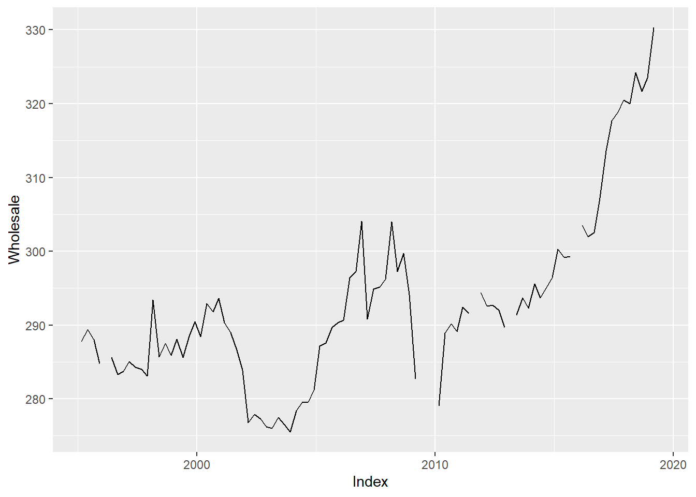

Open excel file, prepare data
#Libraries
library(DescTools)
library(readxl)
library(xts)
library(zoo)
library(mondate)
# <------------------> CONSUMPTION
#Formating the excel file to a data frame
Cons <- read_xlsx("CleanExcelData.xlsx",sheet = 1, col_names = FALSE,na = c(":",";"))
Cons <- t(Cons)
Cons <- Cons[-1,]
Cons1 <- as.data.frame(Cons[,1])
Cons <- cbind(Cons1,as.numeric(Cons[,2]))
remove(Cons1)
names(Cons) <- c("Date","Consumption")
#Formating dates
Cons$Date <- as.Date(as.yearqtr(Cons$Date, format = "%YQ%q"))
Dates <- as.Date(as.yearqtr(Cons$Date, format = "%YQ%q"))
Data <- Cons$Consumption
# <------------------> LOANS
Loans <- read_xlsx("CleanExcelData.xlsx",sheet = 2, col_names = FALSE, na = c(":",";"))
colnames(Loans)<- Loans[1,]
Loans <- Loans[-1,]
#Without this line of code I could not make the as.Date function work
Sys.setlocale("LC_TIME", "C")
## [1] "C"
Loans$Date <- as.Date(paste0(as.character(Loans$Date),"01"),format='%Y%b%d')
#Converting columns to numeric format
Loans$Loans <- as.numeric(Loans$Loans)
Loans$`Credit for consumption` <- as.numeric(Loans$`Credit for consumption`)
Loans$`Lending for house purchase` <- as.numeric(Loans$`Lending for house purchase`)
Loans$`Other lending` <- as.numeric(Loans$`Other lending`)
# <------------------> WAGES
Wages <- read_xlsx("CleanExcelData.xlsx",sheet = 3, col_names = FALSE, na = c(":",";"))
Wages <- t(Wages)
#Renamed the columns that will come handy later
Wages[1,1] <- "Date"
Wages[1,12] <- "Germany"
colnames(Wages)<- Wages[1,]
Wages <- Wages[-1,]
Wages <- as.data.frame(Wages)
Wages1 <- Wages[,1]
Wages[] <- lapply(Wages, function(x) as.numeric(as.character(x)))
Wages[,1]<- Wages1
remove(Wages1)
# nrow(Wages)
#Find where a row is missing
# autoplot(Wages$Germany)
#A spike is missing around 2002 making it easy to find that 2002Q4 is missing
Wages$Date <- as.Date(as.yearqtr(Wages$Date, format = "%YQ%q"))
Wages <- rbind(Wages[1:32,],rep(NA,ncol(Wages)),Wages[-(1:32),])
Wages[33,1] <- as.Date("2002-10-01")
Data <- cbind(Data, Wages$Germany)
# <------------------> WHOLESALE
whsl <- read_xlsx("CleanExcelData.xlsx",sheet = 4, col_names = FALSE, na = c(":",";"))
colnames(whsl)<- c("Date","Wholesale")
whsl <- whsl[-1,]
whsl$Wholesale <- as.numeric(whsl$Wholesale)
whsl$Date <- as.Date(paste0(as.character(gsub("M","",whsl$Date)), "01"), format="%Y%m%d")
#I need xts object to use apply.quarterly function
whsl <- xts(x = whsl[,-1],order.by = whsl$Date)
#Losing some information but making my predictions more constant
whsl <- apply.quarterly(whsl, FUN = "sum", na.rm = FALSE)
# JOINING DATA to create a data.frame with all the time serieses
Data <- cbind(whsl$Wholesale,Data)
autoplot.zoo(Data)
Visualizing my data
library(ggplot2)
ggplot(Wages, aes(y=Germany)) +
geom_boxplot() +
theme_minimal()
autoplot.zoo(Cons)
ggplot(Cons, aes(y=Cons[,1])) +
geom_boxplot() +
theme_minimal()
autoplot.zoo(whsl)

ggplot(whsl, aes(y=whsl$Wholesale)) +
geom_boxplot() +
theme_minimal()
Outliers
#Because of time limitations I will use the IQR method to find and remove outliers
for (col in 1:ncol(Data)){
trim <- Data[,col]
qnt <- quantile(trim, probs=c(.25, .75), na.rm = T)
caps <- quantile(trim, probs=c(.05, .95), na.rm = T)
dist <- 1.5 * IQR(trim, na.rm = T)
# These outliers would disort my models, as they did not fit my model assumptions therefore I remove them and predict a value in their place
trim[trim < (qnt[1] - dist)] <- NA
trim[trim > (qnt[2] + dist)] <- NA
Data[,col] <- trim
}
for (col in 2:ncol(Loans)){
trim <- as.matrix(Loans[,col])
qnt <- quantile(trim, probs=c(.25, .75), na.rm = T)
caps <- quantile(trim, probs=c(.05, .95), na.rm = T)
dist <- 1.5 * IQR(trim, na.rm = T)
trim[trim < (qnt[1] - dist)] <- NA
trim[trim > (qnt[2] + dist)] <- NA
Loans[,col] <- as.numeric(trim)
}
Predicting missing values
library(mice)
# I used MICE to predict missing values as I did not want to lose all the information and continuity of my original data set
#Also MICE seemed to be a verified way to predict missing values according to the reading I did
names(Data)<- c("Wholesale","Consumption","Wages")
Data <- Data[-nrow(Data),]
Dates <- Dates[-length(Dates)]
MiceData <- mice(Data,m=5,maxit=50,meth='pmm',seed=500,print=FALSE)
Series <- complete(MiceData,1)
Series <- cbind(Dates, Series)
Series <- xts(x = Series[,-1],order.by = Series$Dates)
autoplot.zoo(Series)
names(Loans) <- c("Date","Loans","CrdtCons","Lnd4House","Other")
MiceData <- mice(Loans[,-1],m=5,maxit=50,meth='pmm',seed=500,print=FALSE)
Loans <- cbind(Loans$Date,complete(MiceData, 1))
names(Loans) <- c("Date","Loans","CrdtCons","Lnd4House","Other")
#Aggregate monthly data to quarterly
Loans <- xts(x = Loans[,-1],order.by = Loans$Date)
Loanstemp <- apply.quarterly(Loans[,1], FUN = "sum", na.rm = FALSE)
for (i in 2:ncol(Loans)) {
tempLoan <- apply.quarterly(Loans[,i], FUN = "sum", na.rm = FALSE)
Loanstemp <- cbind(Loanstemp, tempLoan)
}
Detrending and seasonality
library(aTSA)
library(mFilter)
Series <- ts(Series,start=c(1995,1),frequency = 4)
Noseason <- Series
for (var in 1:ncol(Series)){
seas <- decompose(Series[,var])
Noseason[,var] <- Series[,var] - seas$seasonal
}
#Dickey-fuller tests
# adf.test(Noseason[,1])
# adf.test(Noseason[,2])
# adf.test(Noseason[,3])
Stac <- diff(Noseason)
#Data seems to be stationary
adf.test(Stac[,1])
## Augmented Dickey-Fuller Test
## alternative: stationary
##
## Type 1: no drift no trend
## lag ADF p.value
## [1,] 0 -20.77 0.01
## [2,] 1 -8.81 0.01
## [3,] 2 -5.67 0.01
## [4,] 3 -5.65 0.01
## Type 2: with drift no trend
## lag ADF p.value
## [1,] 0 -20.68 0.01
## [2,] 1 -8.79 0.01
## [3,] 2 -5.67 0.01
## [4,] 3 -5.69 0.01
## Type 3: with drift and trend
## lag ADF p.value
## [1,] 0 -20.62 0.01
## [2,] 1 -8.77 0.01
## [3,] 2 -5.65 0.01
## [4,] 3 -5.65 0.01
## ----
## Note: in fact, p.value = 0.01 means p.value <= 0.01
adf.test(Stac[,2])
## Augmented Dickey-Fuller Test
## alternative: stationary
##
## Type 1: no drift no trend
## lag ADF p.value
## [1,] 0 -16.19 0.01
## [2,] 1 -11.60 0.01
## [3,] 2 -9.34 0.01
## [4,] 3 -6.84 0.01
## Type 2: with drift no trend
## lag ADF p.value
## [1,] 0 -16.35 0.01
## [2,] 1 -12.00 0.01
## [3,] 2 -9.93 0.01
## [4,] 3 -7.58 0.01
## Type 3: with drift and trend
## lag ADF p.value
## [1,] 0 -16.26 0.01
## [2,] 1 -11.93 0.01
## [3,] 2 -9.90 0.01
## [4,] 3 -7.57 0.01
## ----
## Note: in fact, p.value = 0.01 means p.value <= 0.01
adf.test(Stac[,3])
## Augmented Dickey-Fuller Test
## alternative: stationary
##
## Type 1: no drift no trend
## lag ADF p.value
## [1,] 0 -16.17 0.01
## [2,] 1 -11.50 0.01
## [3,] 2 -8.58 0.01
## [4,] 3 -7.41 0.01
## Type 2: with drift no trend
## lag ADF p.value
## [1,] 0 -16.20 0.01
## [2,] 1 -11.64 0.01
## [3,] 2 -8.82 0.01
## [4,] 3 -7.81 0.01
## Type 3: with drift and trend
## lag ADF p.value
## [1,] 0 -16.14 0.01
## [2,] 1 -11.64 0.01
## [3,] 2 -8.88 0.01
## [4,] 3 -7.91 0.01
## ----
## Note: in fact, p.value = 0.01 means p.value <= 0.01
plot(Noseason[,2])

plot(Stac[,2])
Estimating model
library(forecast)
library(vars)
library(car)
#Visualizing the data to get a grasp on what ARIMA model would fit the most
acf(Stac[,2])
pacf(Stac[,2], lag.max = 50)
unimodel <- auto.arima(Stac[,2],ic = 'aic', seasonal = FALSE)
plot(forecast(unimodel,h=20))
summary(unimodel)
## Series: Stac[, 2]
## ARIMA(0,0,1) with non-zero mean
##
## Coefficients:
## ma1 mean
## -0.7527 837.4082
## s.e. 0.0654 193.3513
##
## sigma^2 estimated as 56083620: log likelihood=-992.06
## AIC=1990.12 AICc=1990.38 BIC=1997.81
##
## Training set error measures:
## ME RMSE MAE MPE MAPE MASE ACF1
## Training set 48.46246 7410.48 4249.511 193.2061 340.6203 0.7027023 -0.04297589
durbinWatsonTest(as.numeric(unimodel$residuals))
## [1] 2.085705
adf.test(as.numeric(unimodel$residuals))
## Augmented Dickey-Fuller Test
## alternative: stationary
##
## Type 1: no drift no trend
## lag ADF p.value
## [1,] 0 -10.12 0.01
## [2,] 1 -7.22 0.01
## [3,] 2 -5.54 0.01
## [4,] 3 -4.25 0.01
## Type 2: with drift no trend
## lag ADF p.value
## [1,] 0 -10.07 0.01
## [2,] 1 -7.18 0.01
## [3,] 2 -5.50 0.01
## [4,] 3 -4.23 0.01
## Type 3: with drift and trend
## lag ADF p.value
## [1,] 0 -10.03 0.01
## [2,] 1 -7.16 0.01
## [3,] 2 -5.52 0.01
## [4,] 3 -4.25 0.01
## ----
## Note: in fact, p.value = 0.01 means p.value <= 0.01
#Not cointegrated
VARnumber <- VARselect(Stac, lag.max =6)
VARmodel <- VAR(Stac, p=as.numeric(VARnumber$selection[1]), ic = c("aic"))
#Looking for a value close to 2 to test residuals autocorrelation
durbinWatsonTest(VARmodel$varresult$Consumption$residuals)
## [1] 1.978096
adf.test(VARmodel$varresult$Consumption$residuals)
## Augmented Dickey-Fuller Test
## alternative: stationary
##
## Type 1: no drift no trend
## lag ADF p.value
## [1,] 0 -9.44 0.01
## [2,] 1 -7.00 0.01
## [3,] 2 -5.83 0.01
## [4,] 3 -5.25 0.01
## Type 2: with drift no trend
## lag ADF p.value
## [1,] 0 -9.39 0.01
## [2,] 1 -6.96 0.01
## [3,] 2 -5.80 0.01
## [4,] 3 -5.22 0.01
## Type 3: with drift and trend
## lag ADF p.value
## [1,] 0 -9.35 0.01
## [2,] 1 -6.93 0.01
## [3,] 2 -5.77 0.01
## [4,] 3 -5.20 0.01
## ----
## Note: in fact, p.value = 0.01 means p.value <= 0.01
#Not cointegrated
Building model including Loans data
library(aTSA)
library(mFilter)
a <- nrow(Series) - nrow(Loanstemp)
Fullseries <- cbind(Series[-c(1:a),],Loanstemp)
Fullseries <- ts(Fullseries,start=c(2003,1),frequency = 4)
Noseason <- Fullseries
for (var in 1:ncol(Fullseries)){
seas <- decompose(Fullseries[,var])
Noseason[,var] <- Fullseries[,var] - seas$seasonal
}
#Dickey-fuller tests like previously
Stac <- diff(diff(Noseason))
# adfTest(Stac[,1])
# adfTest(Stac[,2])
# adfTest(Stac[,3])
# adfTest(Stac[,4])
# adfTest(Stac[,5])
# adfTest(Stac[,6])
# adfTest(Stac[,7])
#Data seems to be stationary according to a new dickey fuller test
VARnumber <- VARselect(Stac, lag.max =6)
VARmodel <- VAR(Stac, p=as.numeric(VARnumber$selection[1]), ic = c("aic"))
VARmodel$varresult$Consumption
##
## Call:
## lm(formula = y ~ -1 + ., data = datamat)
##
## Coefficients:
## Wholesale.l1 Consumption.l1 Wages.l1 Loans.l1 CrdtCons.l1
## -72.65718 -1.02389 -0.17352 0.24734 2.98606
## Lnd4House.l1 Other.l1 Wholesale.l2 Consumption.l2 Wages.l2
## 0.29843 -8.54611 479.81016 -0.19560 -0.43292
## Loans.l2 CrdtCons.l2 Lnd4House.l2 Other.l2 Wholesale.l3
## 2.04526 -0.83245 4.59325 -9.30061 1194.82898
## Consumption.l3 Wages.l3 Loans.l3 CrdtCons.l3 Lnd4House.l3
## -1.44643 0.15047 3.91779 2.91618 -4.49443
## Other.l3 Wholesale.l4 Consumption.l4 Wages.l4 Loans.l4
## -6.75852 504.94859 -0.50378 -0.17900 4.74734
## CrdtCons.l4 Lnd4House.l4 Other.l4 Wholesale.l5 Consumption.l5
## 1.34522 -0.23014 -7.31619 -33.70238 0.12917
## Wages.l5 Loans.l5 CrdtCons.l5 Lnd4House.l5 Other.l5
## -0.41927 3.27839 0.05578 -0.64873 -7.06642
## Wholesale.l6 Consumption.l6 Wages.l6 Loans.l6 CrdtCons.l6
## -921.57788 0.74183 -0.44803 0.68844 0.96137
## Lnd4House.l6 Other.l6 const
## -2.84747 -1.49000 46.62659
#Looking for a value close to 2 to test residuals autocorrelation
durbinWatsonTest(VARmodel$varresult$Consumption$residuals)
## [1] 1.668622
adf.test(VARmodel$varresult$Consumption$residuals)
## Augmented Dickey-Fuller Test
## alternative: stationary
##
## Type 1: no drift no trend
## lag ADF p.value
## [1,] 0 -6.54 0.01
## [2,] 1 -7.44 0.01
## [3,] 2 -5.40 0.01
## [4,] 3 -3.83 0.01
## Type 2: with drift no trend
## lag ADF p.value
## [1,] 0 -6.48 0.01
## [2,] 1 -7.38 0.01
## [3,] 2 -5.35 0.01
## [4,] 3 -3.79 0.01
## Type 3: with drift and trend
## lag ADF p.value
## [1,] 0 -6.50 0.0100
## [2,] 1 -7.41 0.0100
## [3,] 2 -5.42 0.0100
## [4,] 3 -3.85 0.0226
## ----
## Note: in fact, p.value = 0.01 means p.value <= 0.01
#Not cointegrated